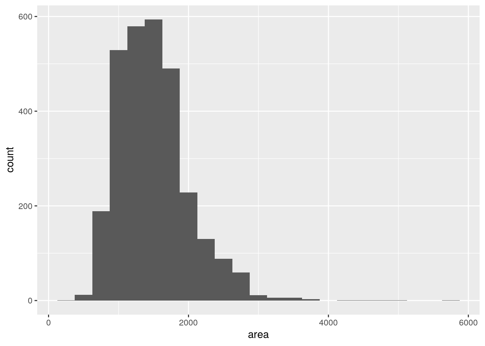
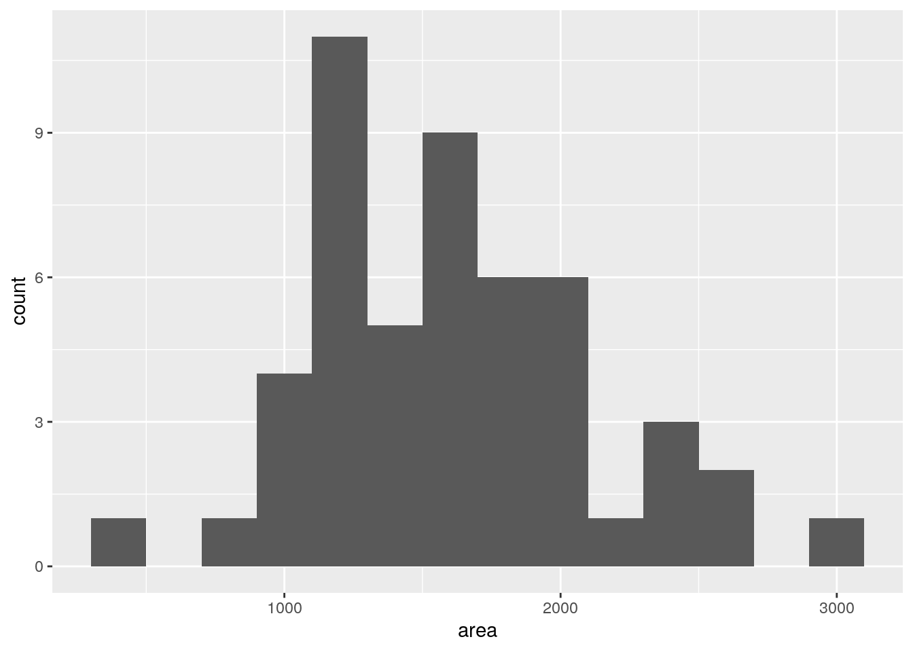
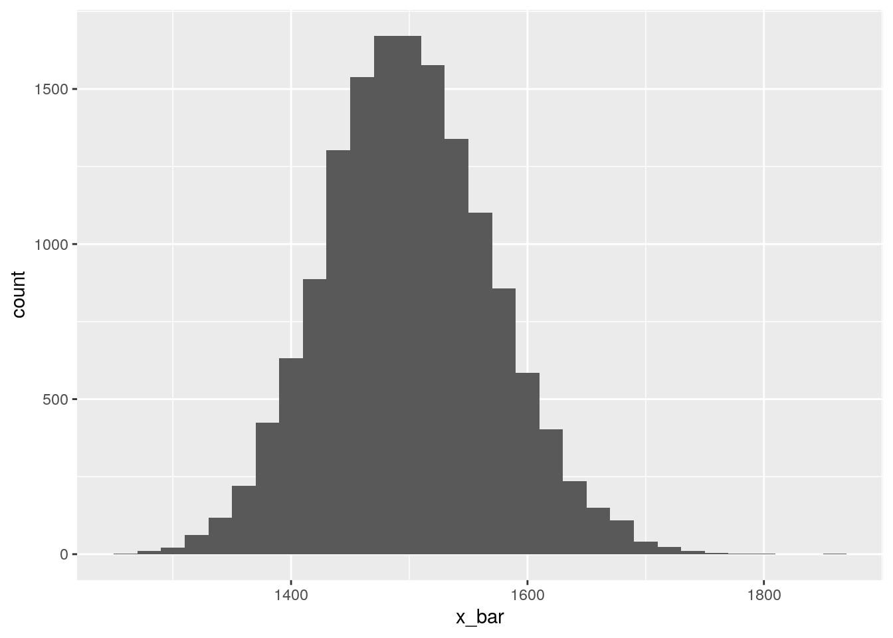
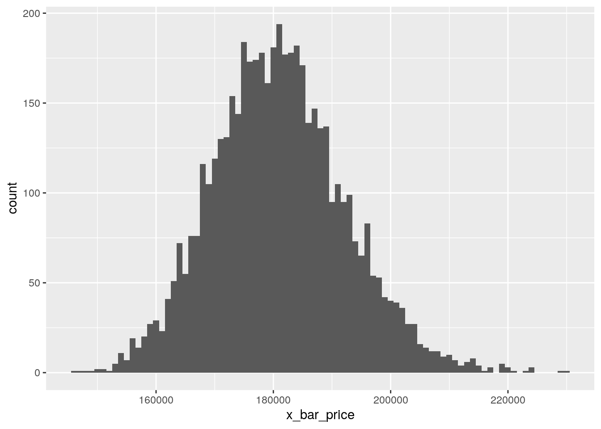
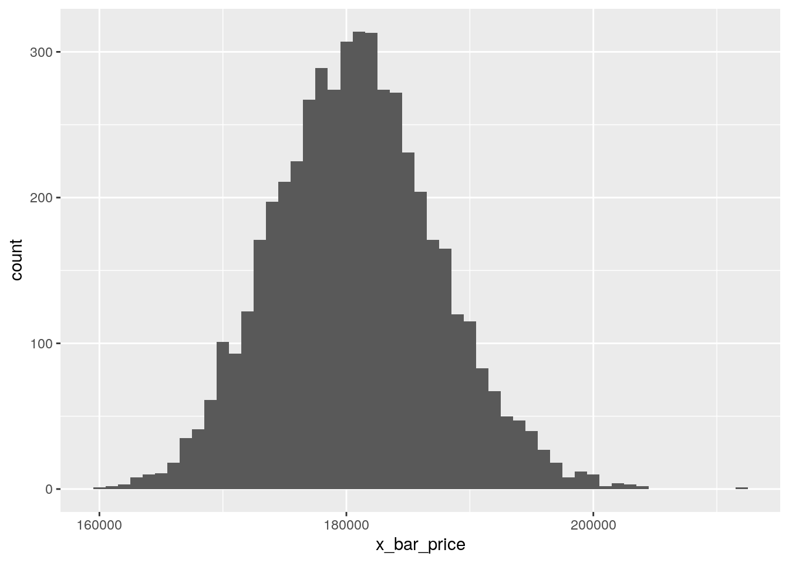
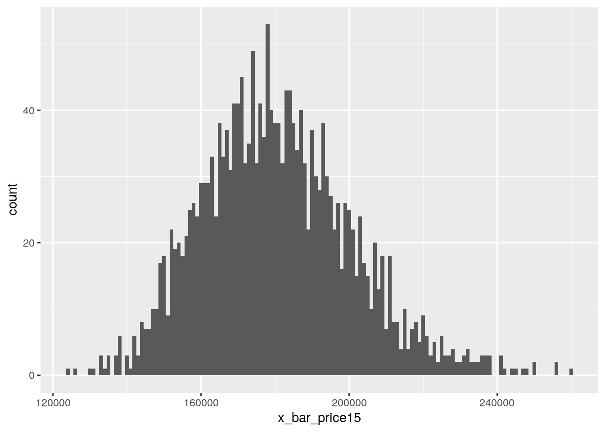
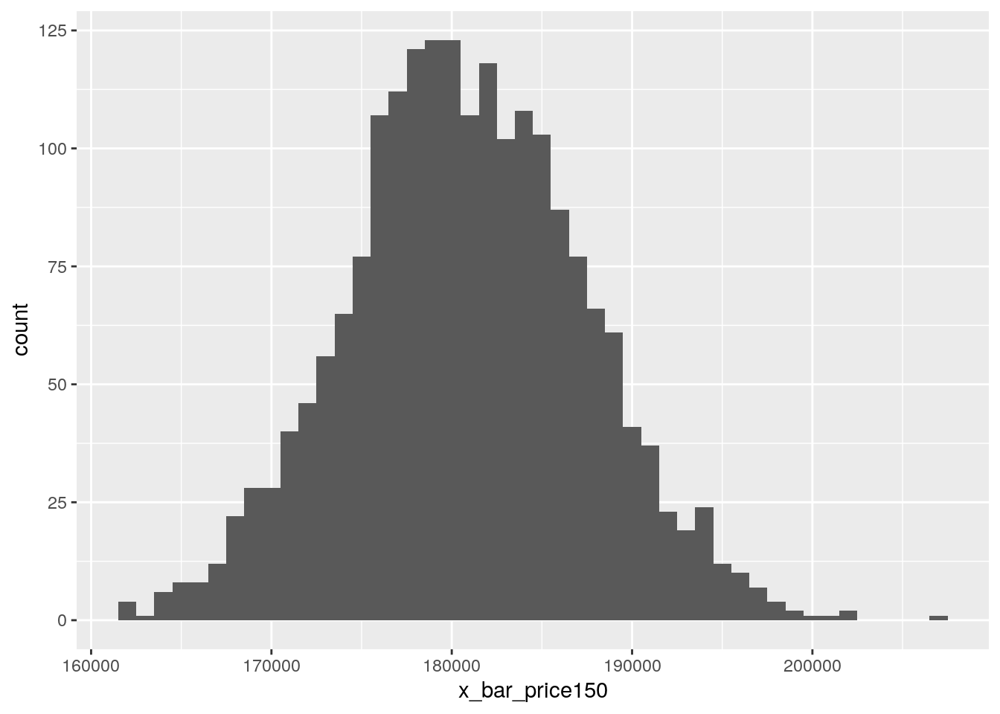

1 Week 1
Week 1 covers calculating sampling distributions. Below is the activity.
Complete all Exercises, and submit answers to Questions on the Coursera platform.
1.1 Getting Started
1.1.1 Load packages
In this lab we will explore the data using the dplyr package and visualize it using the ggplot2 package for data visualization. The data can be found in the companion package for this course, statsr.
Let’s load the packages.
library(statsr)
library(dplyr)
library(shiny)
library(ggplot2)1.1.2 The data
We consider real estate data from the city of Ames, Iowa. The details of every real estate transaction in Ames is recorded by the City Assessor’s office. Our particular focus for this lab will be all residential home sales in Ames between 2006 and 2010. This collection represents our population of interest. In this lab we would like to learn about these home sales by taking smaller samples from the full population. Let’s load the data.
data(ames)We see that there are quite a few variables in the data set, enough to do a very in-depth analysis. For this lab, we’ll restrict our attention to just two of the variables: the above ground living area of the house in square feet (area) and the sale price (price).
We can explore the distribution of areas of homes in the population of home sales visually and with summary statistics. Let’s first create a visualization, a histogram:
ggplot(data = ames, aes(x = area)) +
geom_histogram(binwidth = 250)
Let’s also obtain some summary statistics. Note that we can do this using the summarise function. We can calculate as many statistics as we want using this function, and just string along the results. Some of the functions below should be self explanatory (like mean, median, sd, IQR, min, and max). A new function here is the quantile function which we can use to calculate values corresponding to specific percentile cutoffs in the distribution. For example quantile(x, 0.25) will yield the cutoff value for the 25th percentile (Q1) in the distribution of x. Finding these values are useful for describing the distribution, as we can use them for descriptions like “the middle 50% of the homes have areas between such and such square feet”.
ames %>%
summarise(mu = mean(area), pop_med = median(area),
sigma = sd(area), pop_iqr = IQR(area),
pop_min = min(area), pop_max = max(area),
pop_q1 = quantile(area, 0.25), # first quartile, 25th percentile
pop_q3 = quantile(area, 0.75)) # third quartile, 75th percentile## # A tibble: 1 x 8
## mu pop_med sigma pop_iqr pop_min pop_max pop_q1 pop_q3
## <dbl> <dbl> <dbl> <dbl> <dbl> <dbl> <dbl> <dbl>
## 1 1500. 1442 506. 617. 334 5642 1126 1743.- Which of the following is false?
- The distribution of areas of houses in Ames is unimodal and right-skewed.
- 50% of houses in Ames are smaller than 1,499.69 square feet.
- The middle 50% of the houses range between approximately 1,126 square feet and 1,742.7 square feet.
- The IQR is approximately 616.7 square feet.
- The smallest house is 334 square feet and the largest is 5,642 square feet.
1.2 The unknown sampling distribution
In this lab we have access to the entire population, but this is rarely the case in real life. Gathering information on an entire population is often extremely costly or impossible. Because of this, we often take a sample of the population and use that to understand the properties of the population.
If we were interested in estimating the mean living area in Ames based on a sample, we can use the following command to survey the population.
samp1 <- ames %>%
sample_n(size = 50)This command collects a simple random sample of size 50 from the ames dataset, which is assigned to samp1. This is like going into the City Assessor’s database and pulling up the files on 50 random home sales. Working with these 50 files would be considerably simpler than working with all 2930 home sales.
Exercise: Describe the distribution of this sample? How does it compare to the distribution of the population? Hint: sample_n function takes a random sample of observations (i.e. rows) from the dataset, you can still refer to the variables in the dataset with the same names. Code you used in the previous exercise will also be helpful for visualizing and summarizing the sample, however be careful to not label values mu and sigma anymore since these are sample statistics, not population parameters. You can customize the labels of any of the statistics to indicate that these come from the sample.
# type your code for the Exercise here, and Run Document
ggplot(samp1, aes(x = area)) + geom_histogram(binwidth = 200)
# The distribution is symmetric unlike the population distributionIf we’re interested in estimating the average living area in homes in Ames using the sample, our best single guess is the sample mean.
samp1 %>%
summarise(x_bar = mean(area))## # A tibble: 1 x 1
## x_bar
## <dbl>
## 1 1271.Depending on which 50 homes you selected, your estimate could be a bit above or a bit below the true population mean of 1,499.69 square feet. In general, though, the sample mean turns out to be a pretty good estimate of the average living area, and we were able to get it by sampling less than 3% of the population.
- Suppose we took two more samples, one of size 100 and one of size 1000. Which would you think would provide a more accurate estimate of the population mean?
- Sample size of 50.
- Sample size of 100.
- Sample size of 1000.
Let’s take one more sample of size 50, and view the mean area in this sample:
ames %>%
sample_n(size = 1000) %>%
summarise(x_bar = mean(area))## # A tibble: 1 x 1
## x_bar
## <dbl>
## 1 1506.Not surprisingly, every time we take another random sample, we get a different sample mean. It’s useful to get a sense of just how much variability we should expect when estimating the population mean this way. The distribution of sample means, called the sampling distribution, can help us understand this variability. In this lab, because we have access to the population, we can build up the sampling distribution for the sample mean by repeating the above steps many times. Here we will generate 15,000 samples and compute the sample mean of each. Note that we are sampling with replacement, replace = TRUE since sampling distributions are constructed with sampling with replacement.
sample_means50 <- ames %>%
rep_sample_n(size = 50, reps = 15000, replace = TRUE) %>%
summarise(x_bar = mean(area))
ggplot(data = sample_means50, aes(x = x_bar)) +
geom_histogram(binwidth = 20)
Here we use R to take 15,000 samples of size 50 from the population, calculate the mean of each sample, and store each result in a vector called sample_means50. Next, we review how this set of code works.
Exercise: How many elements are there in sample_means50? Describe the sampling distribution, and be sure to specifically note its center. Make sure to include a plot of the distribution in your answer.
# type your code for the Exercise here, and Run Document
#No. of elements in sample_means50
dim(sample_means50)## [1] 15000 2# Center of sampling distribution
sample_means50 %>%
summarise(means = mean(x_bar))## # A tibble: 1 x 1
## means
## <dbl>
## 1 1500.#Given that 15000 samples are considered, the distribution resembles a normal distribution and it looks symmetric. Sample means vary around the population mean equally.1.3 Interlude: Sampling distributions
The idea behind the rep_sample_n function is repetition. Earlier we took a single sample of size n (50) from the population of all houses in Ames. With this new function we are able to repeat this sampling procedure rep times in order to build a distribution of a series of sample statistics, which is called the sampling distribution.
Note that in practice one rarely gets to build sampling distributions, because we rarely have access to data from the entire population.
Without the rep_sample_n function, this would be painful. We would have to manually run the following code 15,000 times
ames %>%
sample_n(size = 50) %>%
summarise(x_bar = mean(area))as well as store the resulting sample means each time in a separate vector.
Note that for each of the 15,000 times we computed a mean, we did so from a different sample!
Exercise: To make sure you understand how sampling distributions are built, and exactly what the sample_n and do function do, try modifying the code to create a sampling distribution of 25 sample means from samples of size 10, and put them in a data frame named sample_means_small. Print the output. How many observations are there in this object called sample_means_small? What does each observation represent?
# type your code for the Exercise here, and Run Document
sample_means_small <- ames %>%
rep_sample_n(size = 10, reps = 25, replace = TRUE) %>%
summarise(x_bar_practice = mean(area))- How many elements are there in this object called
sample_means_small?- 0
- 3
- 25
- 100
- 5,000
# type your code for Question 3 here, and Run Document
dim(sample_means_small)## [1] 25 2sample_means_small## # A tibble: 25 x 2
## replicate x_bar_practice
## <int> <dbl>
## 1 1 1641.
## 2 2 1465.
## 3 3 1680
## 4 4 1395.
## 5 5 1488.
## 6 6 1591.
## 7 7 1461.
## 8 8 1406.
## 9 9 1366
## 10 10 1257.
## # ... with 15 more rows- Which of the following is true about the elements in the sampling distributions you created?
- Each element represents a mean square footage from a simple random sample of 10 houses.
- Each element represents the square footage of a house.
- Each element represents the true population mean of square footage of houses.
1.4 Sample size and the sampling distribution
Mechanics aside, let’s return to the reason we used the rep_sample_n function: to compute a sampling distribution, specifically, this one.
ggplot(data = sample_means50, aes(x = x_bar)) +
geom_histogram(binwidth = 20)
The sampling distribution that we computed tells us much about estimating the average living area in homes in Ames. Because the sample mean is an unbiased estimator, the sampling distribution is centered at the true average living area of the population, and the spread of the distribution indicates how much variability is induced by sampling only 50 home sales.
In the remainder of this section we will work on getting a sense of the effect that sample size has on our sampling distribution.
Exercise: Use the app below to create sampling distributions of means of areas from samples of size 10, 50, and 100. Use 5,000 simulations. What does each observation in the sampling distribution represent? How does the mean, standard error, and shape of the sampling distribution change as the sample size increases? How (if at all) do these values change if you increase the number of simulations?
- It makes intuitive sense that as the sample size increases, the center of the sampling distribution becomes a more reliable estimate for the true population mean. Also as the sample size increases, the variability of the sampling distribution ________.
- decreases
- increases
- stays the same
Exercise: Take a random sample of size 50 from price. Using this sample, what is your best point estimate of the population mean?
# type your code for this Exercise here, and Run Document
samp1 %>%
summarise(mu_price = mean(price))## # A tibble: 1 x 1
## mu_price
## <dbl>
## 1 161474.Exercise: Since you have access to the population, simulate the sampling distribution for \(\bar{x}_{price}\) by taking 5000 samples from the population of size 50 and computing 5000 sample means. Store these means in a vector called sample_means50. Plot the data, then describe the shape of this sampling distribution. Based on this sampling distribution, what would you guess the mean home price of the population to be?
# type your code for this Exercise here, and Run Document
sample_means50 <- ames %>%
rep_sample_n(size = 50, reps = 5000, replace = TRUE) %>%
summarise(x_bar_price = mean(price))
ggplot(sample_means50,aes(x = x_bar_price)) + geom_histogram(binwidth = 1000)
Exercise: Change your sample size from 50 to 150, then compute the sampling distribution using the same method as above, and store these means in a new vector called sample_means150. Describe the shape of this sampling distribution, and compare it to the sampling distribution for a sample size of 50. Based on this sampling distribution, what would you guess to be the mean sale price of homes in Ames?
# type your code for this Exercise here, and Run Document
sample_means150 <- ames %>%
rep_sample_n(size = 150, reps = 5000, replace = TRUE) %>%
summarise(x_bar_price = mean(price))
ggplot(sample_means150,aes(x = x_bar_price)) + geom_histogram(binwidth = 1000)
So far, we have only focused on estimating the mean living area in homes in Ames. Now you’ll try to estimate the mean home price.
Note that while you might be able to answer some of these questions using the app you are expected to write the required code and produce the necessary plots and summary statistics. You are welcomed to use the app for exploration.
Exercise: Take a sample of size 15 from the population and calculate the mean price of the homes in this sample. Using this sample, what is your best point estimate of the population mean of prices of homes?
# type your code for this Exercise here, and Run Document
samp1price <- ames %>%
sample_n(size = 15)
samp1price %>%
summarise(mean(price))## # A tibble: 1 x 1
## `mean(price)`
## <dbl>
## 1 196388.Exercise: Since you have access to the population, simulate the sampling distribution for \(\bar{x}_{price}\) by taking 2000 samples from the population of size 15 and computing 2000 sample means. Store these means in a vector called sample_means15. Plot the data, then describe the shape of this sampling distribution. Based on this sampling distribution, what would you guess the mean home price of the population to be? Finally, calculate and report the population mean.
# type your code for this Exercise here, and Run Document
sample_means15 <- ames %>%
rep_sample_n(size = 15, reps = 2000, replace = TRUE) %>%
summarise(x_bar_price15 = mean(price))
ggplot(sample_means15,aes(x = x_bar_price15)) + geom_histogram(binwidth = 1000)
ames %>%
summarise(mu_price = mean(price))## # A tibble: 1 x 1
## mu_price
## <dbl>
## 1 180796.Exercise: Change your sample size from 15 to 150, then compute the sampling distribution using the same method as above, and store these means in a new vector called sample_means150. Describe the shape of this sampling distribution, and compare it to the sampling distribution for a sample size of 15. Based on this sampling distribution, what would you guess to be the mean sale price of homes in Ames?
# type your code for this Exercise here, and Run Document
sample_means150 <- ames %>%
rep_sample_n(size = 150, reps = 2000, replace = TRUE) %>%
summarise(x_bar_price150 = mean(price))
ggplot(sample_means150,aes(x = x_bar_price150)) + geom_histogram(binwidth = 1000)
- Which of the following is false?
-
The variability of the sampling distribution with the smaller sample size (
sample_means50) is smaller than the variability of the sampling distribution with the larger sample size (sample_means150). - The means for the two sampling distribtuions are roughly similar.
- Both sampling distributions are symmetric.
-
The variability of the sampling distribution with the smaller sample size (
# type your code for Question 6 here, and Run Document
# Comparing variability between two sampling distributions (n=50), (n =150)
sample_means50 %>%
summarise( max(x_bar_price)-min(x_bar_price))## # A tibble: 1 x 1
## `max(x_bar_price) - min(x_bar_price)`
## <dbl>
## 1 77994.sample_means150 %>%
summarise(max(x_bar_price150) - min(x_bar_price150))## # A tibble: 1 x 1
## `max(x_bar_price150) - min(x_bar_price150)`
## <dbl>
## 1 46172.This is a derivative of an OpenIntro lab, and is released under a Attribution-NonCommercial-ShareAlike 3.0 United States license.